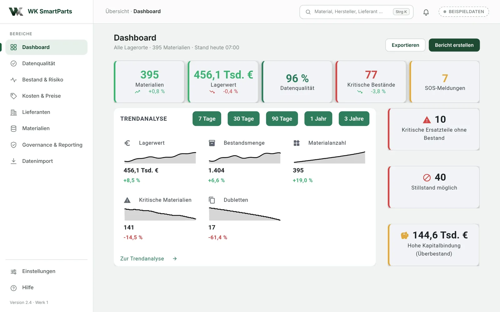
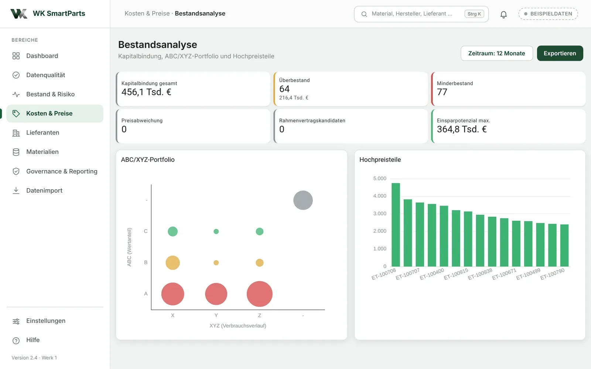
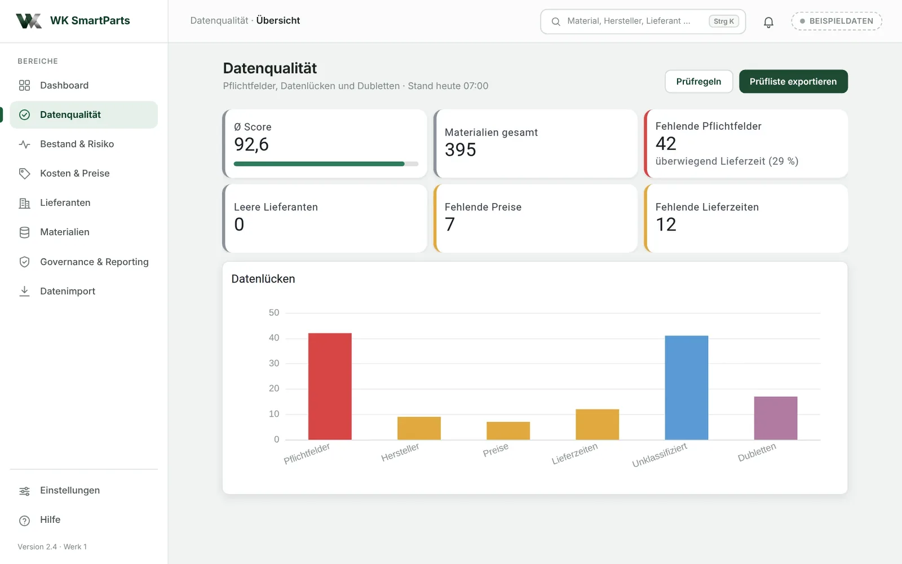
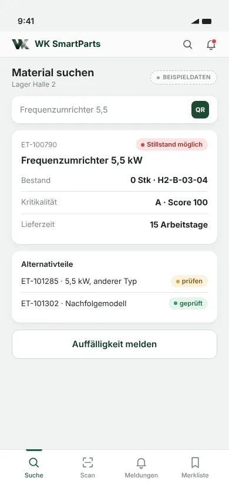

WK SmartParts · Material- und Ersatzteilintelligenz
Ersatzteile intelligent bewerten statt nur verwalten.
Materialdaten, Bestände, Kritikalität, Preise, Lieferzeiten und Lieferantenrisiken in einer gemeinsamen Plattform.
- Status
- Web: noch festzulegen
- iOS: Geplant
- Android: Geplant
Analysieren und entscheiden
Eine Sicht auf Daten, Risiken und Kapital.
Welche Teile können einen Stillstand verursachen, wo ist Kapital gebunden?
- Datenlücken und Dubletten sichtbar machen
- Über- und Fehlbestände gemeinsam betrachten
- Maßnahmen nach Risiko priorisieren




Screenshots mit Beispieldaten.
Fünf Bereiche
Was SmartParts für Sie bewertet.
Vom einzelnen Material bis zur Auswertung für die Leitung.
Datenqualität
Gute Entscheidungen brauchen belastbare Stammdaten.
- Pflichtfelder und Datenlücken je Feld
- Dubletten und unklassifizierte Materialien
- Qualitäts-Score als gemeinsamer Maßstab
Bestandsoptimierung
Zu viel Bestand bindet Kapital, zu wenig gefährdet die Anlage.
- Kritikalität und Bestand in einer Bewertung
- Stillstandsrisiken nach Score priorisiert
- Überbestände als Einsparpotenzial sichtbar
Kosten & Preise
Wie viel Kapital steckt im Lager – und wo lohnt eine genauere Prüfung?
- Kapitalbindung gesamt und je Material
- ABC/XYZ-Portfolio nach Wert und Verbrauch
- Hochpreisteile und Preisabweichungen

Lieferanten & Lieferzeiten
Lange Lieferzeiten und Einzellieferanten fallen selten auf, bis es eilt.
- Bedarf und offene Bestellungen je Lieferant
- Fehlende Lieferzeiten als Datenlücke erkannt
- Grundlage für Alternativteile und Zweitlieferanten
Governance & Reporting
Zeigt, ob Maßnahmen wirken – und hält die Datenbasis sauber.
- Kennzahlen und Trends über Zeiträume
- Kritische Ereignisse auf einen Blick
- Nachvollziehbare Regeln für Stammdaten
Screenshots mit Beispieldaten.
Kennzahlen
So sieht eine Auswertung aus.
Beispieldatenbestand der Screenshots oben: 395 Materialien eines fiktiven Ersatzteillagers.
Mobile Version
Die Bewertung dort, wo das Teil liegt.
Vor Ort zählt: Welches Teil, wie kritisch, vorrätig – und gibt es eine Alternative?
- Material suchen
- Barcode/QR scannen
- Bestand und Lagerort
- Alternativteile
- Auffälligkeit melden
Mobile Version: Geplant

Einführung
Modular an Ihren Bedarf anpassbar.
Start mit dem Bereich, der heute am meisten kostet – oft Datenqualität oder Bestandsrisiko.
Analyse vorab
Der Quick-Check zeigt, welche Module wirklich Nutzen bringen.
Schrittweiser Ausbau
Weitere Bereiche, sobald die Grundlage steht – ohne Big-Bang-Einführung.
Betriebsmodell
Nach Schutzbedarf und IT-Vorgaben – je nach Produkt und Vereinbarung.
SmartParts bewertet. Die anderen Apps handeln.
Lassen Sie uns ins Gespräch kommen
Wie gut kennen Sie Ihre Ersatzteilrisiken?
Wir sehen uns Ihre Material- und Ersatzteildaten gemeinsam an.